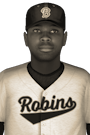

|
|
|  | Baltimore's Chevallier Gets CL Rookie of the Year Award Saturday, October 12th, 1929 The brightest new star in the Canadian League has been named. The 1929 Rookie of the Year Award has been handed out to Baltimore's first baseman J.J. Chevallier, who outshined all his first-year peers in the balloting and on the diamond. He hit .322 for the Baltimore Robins, racking up 94 hits, 9 home runs, 56 RBIs, and 54 runs scored to capture the trophy. He received 16 first place votes, as a unanimous winner. Ben Fandel of the New York Rebels finished second in voting, while Patrice Lapointe of the Ottawa Indians finished third. Player - Team - First Place - Total Points J.J. Chevallier - Baltimore Robins - 16 - 80 Ben Fandel - New York Rebels - 0 - 46 Patrice Lapointe - Ottawa Indians - 0 - 17 Crawford Jones - New York Rebels - 0 - 1 |   |